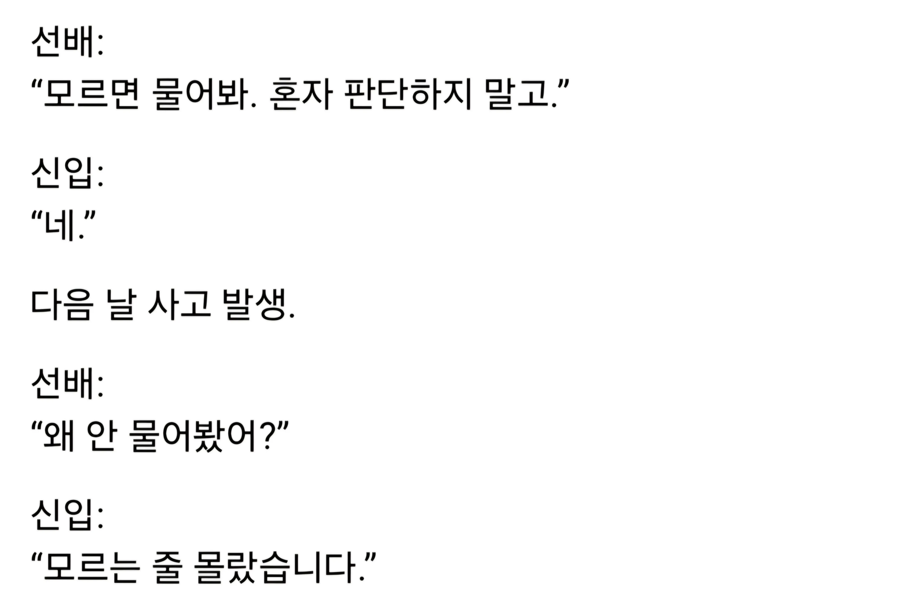

요즘 은근히 많다는 신입의 실수 유형.jpg
댓글
???: 물어볼때마다 돈받아야해
내가 실제 들어본 말임ㅋㅋㅋ
신입은 진짜 사소한거부터 하나하나 알려줘야됨 ㅋㅋㅋㅋ
모르는 줄을 모름 이거 ㄹㅇ임
모르는걸 모른다고 파악하는점에서 중간은 감
소크라테스도 추천한 깨달음 방법임
뭘 모르는지 알아야한다
제가 이걸 참 좋아하는데요 ...
파악 못했쥬?
그것이 신입
저게 당연한거지
신입에게 뭘 기대하는거야
뭘 모르는지 모르는게 ㄹㅇ 그냥 암흑을 걷는 기분임
애초에 신입은 수습할 짬도 안되서 물어보는게 편하긴함
차라리 모르는게 낫지ㅋㅋ
말하는 감자라고 생각하고 교육시키는게 마음 편함.
요새 신입이 엑셀에서 vlookup도 몰라? ㅅㅂ → ㄴㄴ
와 말하는 감자가 엑셀에서 sum도 할 줄 아네? 개굿 → ㅇㅇ
와 sum도 할줄알다니
변명이 좀 신박한데?ㅋㅋㅋㅋ
그럴 수 있지ㅋㅋㅋㅋ
신입때는 내가 뭘 모르고 있는지도 모르는게 정상이긴 해
아예 모르면 뭘 질문해야 하는지도 모르겠음 ㅋㅋ